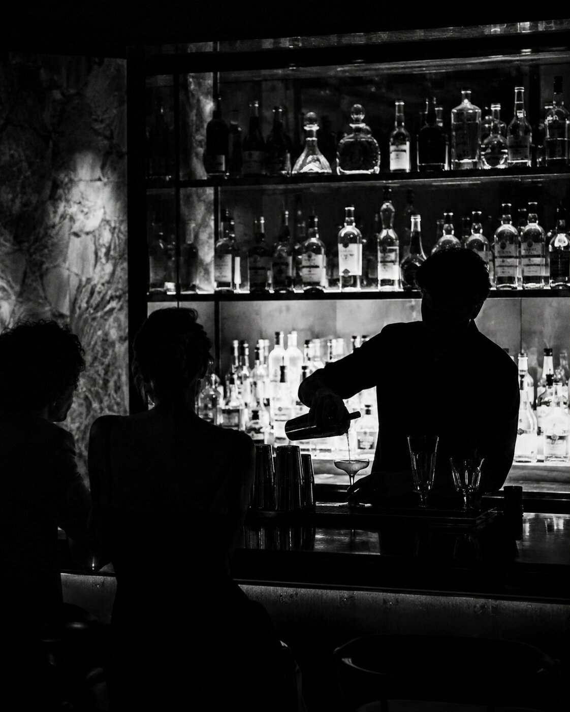
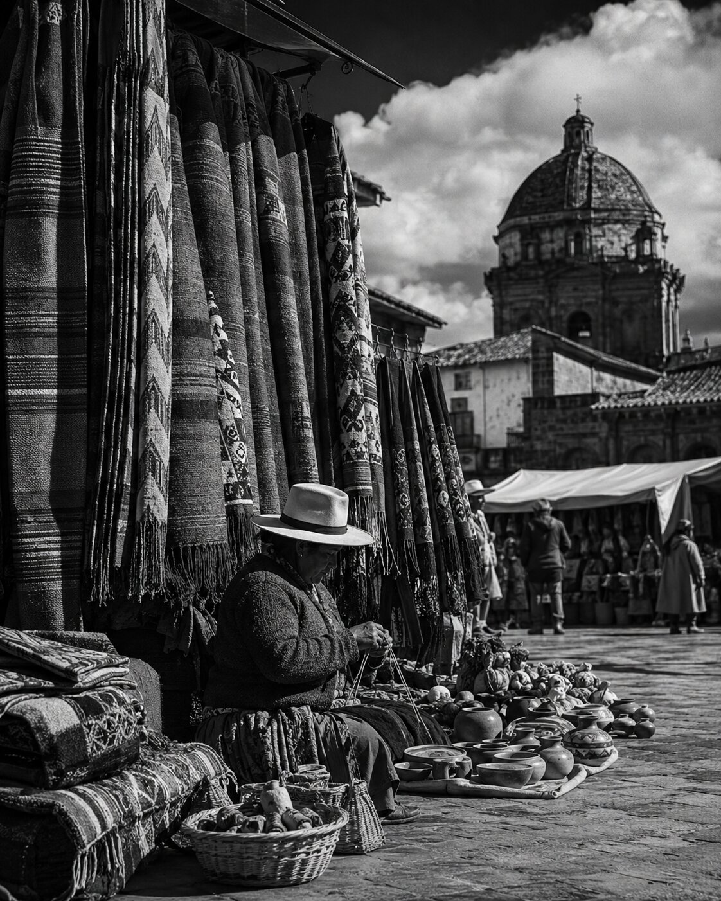
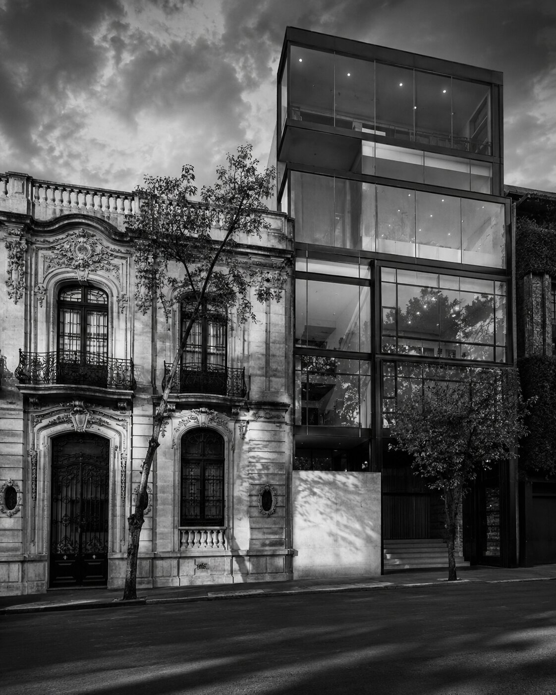

Vida, sabor y cultura en la Ciudad de México — periodismo digital hecho semana a semana, con la ciudad como materia prima.



PULSONEXO es un proyecto de periodismo digital en construcción constante: notas informativas, crónicas, entrevistas y análisis crítico sobre la ciudad que se mueve, se come, se debate y se celebra todos los días. Un ejercicio de oficio hecho por Rodrigo Cázares, comunicólogo en formación, con Ciudad de México como su tema y su terreno de práctica.